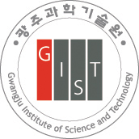

Education
-
M.S. in Electrical Engineering and Computer Science, July 2021 (Expected)
Gwangju Institute of Science and Technology, Gwangju, Republic of Korea
 -
B.Sc. in Electrical, Electronic and Communication Engineering, January 2018
Military Institute of Science & Technology, Dhaka, Bangladesh
CGPA: 3.61/4.00 (Major CGPA: 3.70/4.0; Senior Year CGPA: 3.72/4.0) [Transcript]
-
Higher Secondary Certificate (H.S.C), 2013
Saidpur Government Technical College, Nilphamari, Bangladesh
GPA: 5.00/5.00 -
Secondary School Certificate (S.S.C), 2011
Cantonment Public School & College, Nilphamari, Bangladesh
GPA: 5.00/5.00
Relevant Courses
Graduate Level Courses
LEDs have drawn people's attention because of its very high emission difficiency and environment-friendly
nature. In this course, basic principles and theories of LEDs and applications to solid-state lighting will be
given. And also some basics of lighting (illumination) will be lectured.
This course includes 1 hour discussion session and Four hours Lab session per week after a few weeks of theoretical overview. Most of the materials discussed in the lecture are in classnotes and reference books. Students are supposed to study and give a presentation about one or two of fabrication processes before the
Lab session in the cleanroom. Teaching assistants will help the Lab sessions by teaching students operation
techniques of various processing and testing equipments. Final results of the fabrication and the evaluation of
the LED should be handed in with a SCI journal format which will be given during the class.
This course is designed to provide graduate students with understanding of the fundamental properties of
optoelectronic materials and devices, and their use in a wide range of applications, including Information
and Communication Technology, Health, Biomedical Technology and Environmental.
Course starts at the basic understanding of semiconductors and light propagation, generation, detection,
modulation devices and their applications in various fields.
Fundamental electromagnetics theories (e.g., electromagnetics, planewave propagation, radiation, etc.), basic
antenna types (e.g., linear antenna, aperture antenna, printed antenna, etc.) and operation mechanisms, and
numerical model techniques for antenna design.
Introduction to modern optics in an intermediate level for geometrical optics, wave equation, interference,
coherence, diffractions, light propagation, and fiber optics.
Based on the basic theories of semiconductor physics, advanced dynamic theories associated with various
semiconductor device operations will be described in detail. Devices presented in the lecture include the p-n
junction diode, heterojuction bipolar transistor, Schottky diode, MESFET, MOSFET, PIN diode, LED, laser diode,
HEMT, QW device and etc. Basic principles of essential manufacturing technologies such as modeling and
epitaxy will be described.
This course consists of lectures and experiments. Through lectures basic principles and theory on
semiconductor devices and process equipments. Through experiments students will learn how to use
equipments and fabricate a basic unit device using the equipments.
Undergraduate Level Courses (selected)
Static electric field: Postulates of electrostatics, Coulomb's law for discrete and continuously distributed
charges, Gauss's law and its application, electric potential due to charge distribution, conductors and
dielectrics in static electric field, flux density - boundary conditions, capacitance - electrostatic energy and
forces, energy in terms of field equations, capacitance calculation of different geometries, boundary value
problems – Poisson's and Laplace's equations in different co-ordinate systems. Steady electric current:
Ohm's law, continuity equation, Joule's law, resistance calculation. Static Magnetic field: Postulates of
magnetostatics, Biot-Savart's law, Ampere's law and applications, vector magnetic potential, magnetic
dipole, magnetization, magnetic field intensity and relative permeability, boundary conditions for magnetic
field, magnetic energy, magnetic forces, torque and inductance of different geometries. Time varying fields
and Maxwell's equations: Faraday's law of electromagnetic induction, Maxwell's equations - differential
and integral forms, boundary conditions, potential functions, time harmonic fields. Plane electromagnetic
wave: Poynting theorem and EM lower flow, Plane wave in loss less media - Doppler effect, transverse
electromagnetic wave, polarization of plane wave, plane wave in lossy media – low-loss dielectrics, good
conductors, group velocity, instantaneous and average power densities, normal and oblique incidence of
plane waves at plane boundaries for different polarization.
Introduction to digital signal processing (DSP): Discrete-time signals and systems, analog to digital
conversion, impulse response, finite impulse response (FIR) and infinite impulse response (IIR) of discretetime systems, difference equation, convolution, transient and steady state response. Discrete transformations:
Discrete Fourier series, discrete-time Fourier series, discrete Fourier transform (DFT) and properties, fast
Fourier transform (FFT), inverse fast Fourier transform, Z transformation - properties, transfer function,
poles and zeros and inverse Z transform. Correlation: Circular convolution, auto-correlation and cross
correlation. Digital Filters: FIR filters - linear phase filters, specifications, design using window, optimal and
frequency sampling methods, IIR filters – specifications, design using impulse invariant, bi-linear Z
transformation, least-square methods and finite precision effects.
Crystal structures: Types of crystals, lattice and basis, Bravais lattice and Miller indices. Classical theory of
electrical and thermal conduction: Scattering, mobility and resistivity, temperature dependence of metal
resistivity, Mathiessen's rule, Hall effect and thermal conductivity. Introduction to quantum mechanics:
Wave nature of electrons, Schrodinger's equation, one-dimensional quantum problems - infinite quantum
well, potential step and potential barrier; Heisenbergs's uncertainty principle and quantum box. Band theory
of solids: Band theory from molecular orbital, Bloch theorem, Kronig-Penny model, effective mass, densityof-states. Carrier statistics: Maxwell-Boltzmann and Fermi-Dirac distributions, Fermi energy. Modern
theory of metals: Determination of Fermi energy and average energy of electrons, classical and quantum
mechanical calculation of specific heat. Dielectric properties of materials: Dielectric constant, polarization -
Electronics, ionic and orientational; internal field, Clausius-Mosotti equation, spontaneous polarization,
frequency dependence of dielectric constant, dielectric loss and piezoelectricity. Magnetic properties of
materials: Magnetic moment, magnetization and relative permitivity, different types of magnetic materials,
origin of ferromagnetism and magnetic domains. Introduction to superconductivity: Zero resistance and
Meissner effect, Type I and Type II superconductors and critical current density.
Semiconductors in equilibrium: Energy bands, intrinsic and extrinsic semiconductors, Fermi levels, electron
and hole concentrations, and temperature dependence of carrier concentrations and invariance of Fermi
level. Carrier transport processes and excess carriers: Drift and diffusion, generation and recombination of
excess carriers, built-in-field, Einstein relations, continuity and diffusion equations for holes and electrons
and quasi-Fermi level. PN junction: Basic structure, equilibrium conditions, contact potential, equilibrium
Fermi level, space charge, non-equilibrium condition, forward and reverse bias, carrier injection, minority
and majority carrier currents, transient and ac conditions, time variation of stored charge, reverse recovery
transient and capacitance. Bipolar junction transistor: Basic principle of pnp and npn transistors, emitter
efficiency, base transport factor and current gain, diffusion equation in the base, terminal currents, coupleddiode model and charge control analysis, Ebers-Moll equations and circuit synthesis. Metal-semiconductor
junction: Energy band diagram of metal semiconductor junctions, rectifying and ohmic contacts. MOS
structure: MOS capacitor, energy band diagrams and flat band voltage, threshold voltage and control of
threshold voltage, static C-V characteristics, qualitative theory of MOSFET operation, body effect and
current-voltage relationship of a MOSFET.
Transmission lines: Voltage and current in ideal transmission lines, reflection, transmission, standing wave,
impedance transformation, Smith chart, impedance matching and lossy transmission lines. Waveguides:
General formulation, modes of propagation and losses in parallel plate, rectangular and circular waveguides.
Microstrips: Structures and characteristics. Rectangular resonant cavities: Energy storage, losses and Q.
Radiation: Small current element, radiation resistance, radiation pattern and properties, Hertzian and
halfwave dipoles. Antennas: Mono pole, horn, rhombic and parabolic reflector, array, and Yagi-Uda
antenna.
Introduction. Light propagation through optical fiber: Ray optics theory and mode theory. Optical fiber:
Types and characteristics, transmission characteristics, fiber joints and fiber couplers. Light sources: Light
emitting diodes and laser diodes. Detectors: PIN photo-detector and avalanche photo-detectors. Receiver
analysis: Direct detection and coherent detection, noise and limitations. Transmission limitations: Chromatic
dispersion, nonlinear refraction, four wave mixing and laser phase noises. Optical amplifier: Laser and fiber
amplifiers, applications and limitations. Multi-channel optical system: Frequency division multiplexing,
wavelength division multiplexing and optical CDMA. Radio on fibre technology, Fibre optic access
networks.
Probability and random variables. Distribution and density functions and conditional probability.
Expectation: Moments and characteristic functions. Transformation of a random variable. Vector random
variables. Joint distribution and density. Independence. Sums of random variables. Random Processes.
Correlation functions. Process measurements. Gaussian and Poisson random processes. Noise models.
Stationarity and Ergodicity. Spectral Estimation. Correlation and power spectrum. Cross spectral densities.
Response of linear systems to random inputs. Introduction to discrete time processes, Mean-square error
estimation, Detection and linear filtering.